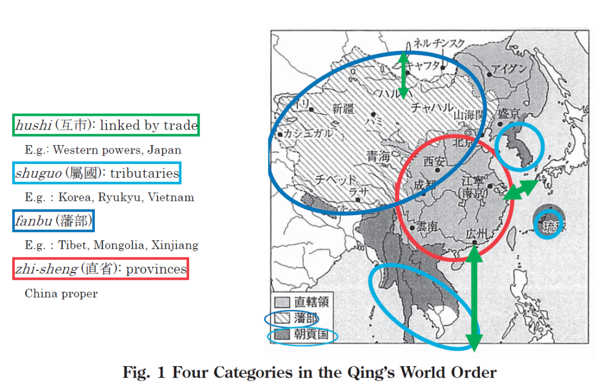
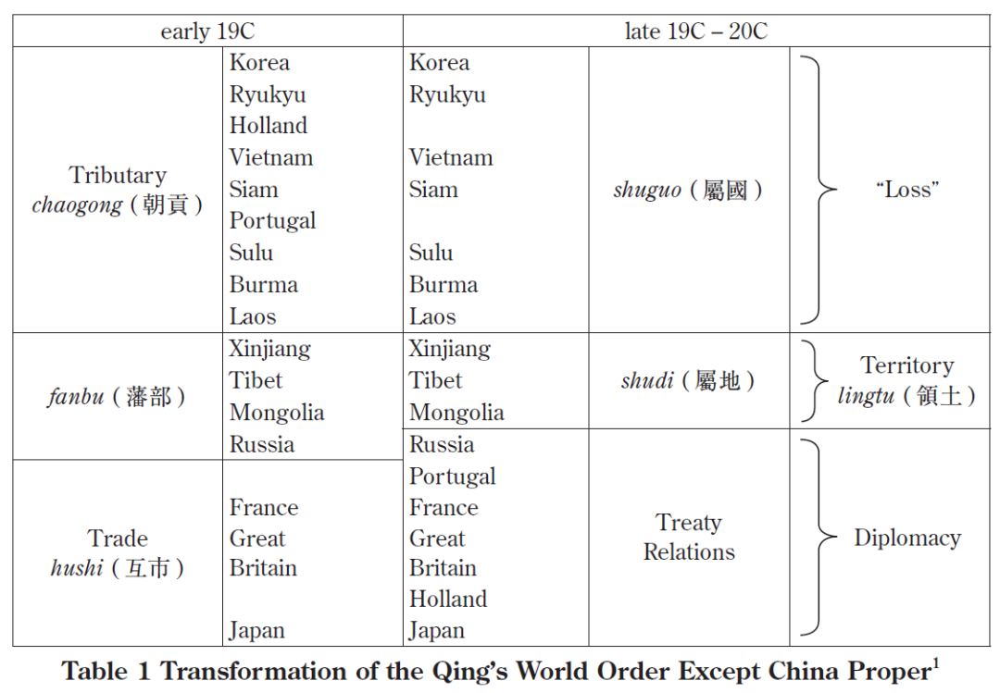
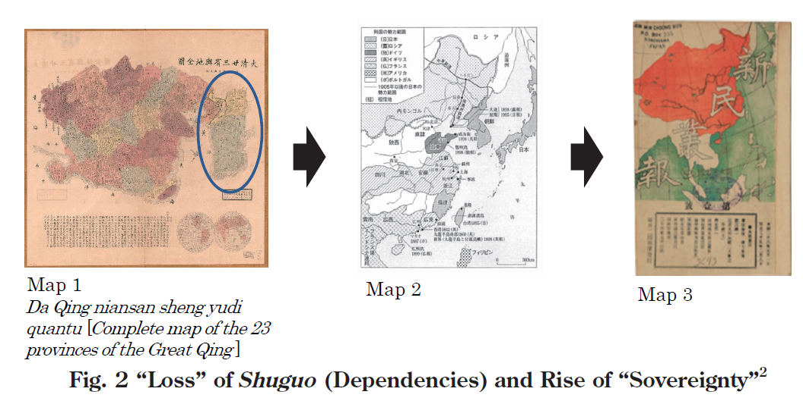
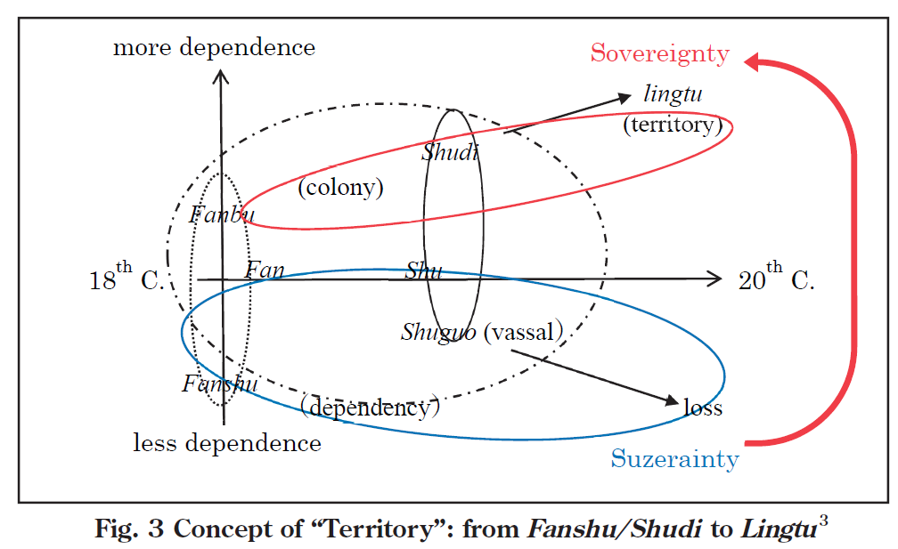
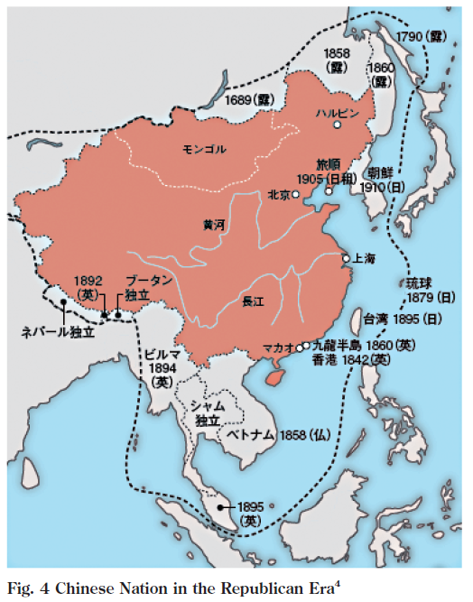

收录于合集

编者按
本文考察的历史阶段正是中国经历现代国际法转型的时期。作者运用历史学和国际法学结合的方法，勾勒出现代清（中国）主权形成的过程。在这一过程中，有一些“附庸”在西方和日本的侵略下丢失，有一些则得以保留。得以保留的那一部分则最终转化成为了清（中国）的“主权领土”。中华人民共和国的所有领土声索和宣称实际上都是建立于清末的“领土主权”的基础上。特别是台湾问题，台湾曾明确处在清的主权之下，而中华人民共和国对台湾的领土宣称则是由清- 民国-人民共和国继承而来。换言之，中国（人）对于“中国领土主权”认识的基点是在清末形成的，本文正式揭示了这一点。
作品简介
【作者】 冈本隆司（OKAMOTO Takashi），京都府立大学文学部教授,研究领域为中国近现代史，特别关注中国近代的对外关系，从明代到民国时期中国的政治、经济、社会之构造及其变迁。
【编译】 徐一凡（国政学人编译员，立命馆大学国际关系学院）
【校对】 石雨宸
【审核】 李博轩
【排版】 贺奕
【来源】 Okamoto, T. (2019). China’s “Territorial Sovereignty” and Its Origins. Japan Review, 3 (2), 13-19.

期刊简介
《日本评论》（Japan Review）由日本国际问题研究所（The Japan Institute of International Affairs）刊行，成立宗旨是向日语学术圈以外的研究者们介绍日本学者的学术成果，内容涉及日本国际关系相关的诸方面。日本国际问题研究所是日本国际问题研究类的顶级智库，与日本外务省关系密切。
**中国的“领土主权”及其起源 ******
China’s “Territorial Sovereignty” and Its Origins ****
冈本隆司
内容提要
中国“领土主权”的概念的根源可追溯至“属地”和“藩部”的概念。这两个概念也可被合称“藩属”。但是因为“藩属”一词也被用指曾经失去的“属国”，如朝鲜、越南和琉球，对于丢失领土的恐惧早已深深植根于中国（人）的思想之中。在传统理论中，领土意味着主权。然而，认为领土总是可能丢失，必须总是保护，从不放弃，则是一种非常中国式的思维方式。不断丧失领土的历史进程深刻影响着中国对“领土主权”概念的理解。“藩属”概念也是现代中国对一些领土的诉求和宣称的起始点，本文认为当下一些领土争端的源头也可以溯及这一历史背景。
文章导读
所谓南海仲裁案中菲律宾方的首席律师保罗·赖克勒（Paul Reichler）曾说，和中国以同一种法律语言进行对话应该是可行的。换句话说，作者认为现在中国和一些其他国家说的不是一种语言，也没有在进行对话。尽管中国的话语和西方的话语表面上是一样的，但常被认为内涵大相径庭。
本文作者作为专攻中国的历史学家，其任务是审视过去并分析这一情况是从何而来的。本文聚焦于“领土主权”这一观念，观察这一术语和概念是如何在不同使用者中产生不同差异的。“领土主权”一词被中国接纳只不过是一个世纪前的事。这一概念在之前并不存在，可能也并不需要存在。作者将从这一背景开始展开论述。
01
清的世界秩序以及藩属之概念
20世纪前中国的世界秩序为何？本文作者试图以图解的方式进行解答。清的世界秩序非常复杂，在这里作者将其归为四大类别。


首先，以贸易为主的对外关系可以被称为“互市”，在图1中以绿色箭头表示。其次，以浅蓝线标记的部分是朝贡国，这些国家与清保持着朝贡关系，在同时期的中华语境（Chinese terminology）中被称为“属国”，包括朝鲜、琉球和越南等。再次，西北部深蓝色标记的部分是“藩部”，包括西藏、蒙古和今天的新疆。最后，位于地图东南部的是汉族聚居的中国本部，被称为“直省”。
西方国家和日本，与清之间保持着互市关系，这意味着双方仅在局部保持贸易往来，但并无政府间的正式关系。互市关系在19世纪下半叶逐渐转变为条约关系。互市国家相对比较早地与中国建立了现代外交关系。
对于标记为蓝色地“属国”和“藩部”该如何理解呢？这一问题就涉及到“领土主权”的概念了。
首先，“属国”指那些中国周边向清朝贡的国家。之所以有“属国”、“上国”之分，是因为其他国家向中国皇帝进贡的同时，也创造了一种君主与臣属间的上下等级关系。又因为朝贡和君臣之分乃是基于儒家学说和礼制，这种关系只能建立在中国及其通晓中文和儒家学说的邻国之间。
反过来说，其他国家就不能成为“属国”或与中国建立朝贡关系。虽然日本由于历史原因只与清保持互市关系，而非清的属国，但不夸张地说本质上还是因为日本不完全通晓中文和儒家文化。
类似的，“藩部”也是不通晓中文和儒家的地区。藩部特指蒙古、西藏和新疆。三地在地理上都是内陆草原地区，不通行中文，也不尊崇儒家。新疆是穆斯林地区，蒙藏则是尊崇藏传佛教。藩部与其他几类地区在社会组织、基本信条和礼仪等方面都大不相同。
这也是为什么作者要在本文中将属国和藩部区分开来。然而，同时期的中文文献中常常将这两者合称为藩属，即使藩属并不是一个常用的中文词。
02
从“藩部”到“属地”
图2中的地图1展示了中日甲午战争后朝鲜半岛的情况。在甲午战后，依照《马关条约》，朝鲜取得独立成为“大韩帝国”。也就是说，朝鲜不再是中国的“属国”了。许多同时期的文献都将此描述为朝鲜的“独立”是朝鲜作为中国属国或藩属地位的终结。

同时，同时期的文献大多将“属国”和“藩部”或多或少视为可替换的词语。尽管朝鲜半岛和西藏处于完全不同的治理体系之下，两者在中文中也往往用同一个词来表示。不仅仅是朝鲜有时像蒙藏一样被称为“藩属”，蒙藏有时也被一些文献称为“属国”。
在19世纪末，由于西方列强和日本的侵略吞并，越南、琉球和朝鲜都结束了与清的朝贡关系，不再是清的属国，所以在表1中这些地区被划归为“丢失”（loss）。属国的丢失在当时成为了一个重要问题。
1897年，清丢失了其最后一个属国朝鲜。大约同一时期，西方在中国大肆攫取利权，掀起“瓜分狂潮”（scramble for concessions），这一进程一直持续到19世纪末。这一时期及以后的清朝（中国）官员变得极度担心国家分裂问题。
清廷相信，当属国相继丢失时，至少要保住剩下的藩部，否则他们将面临一场真正的危机。在这之前的19世纪80年代到90年代间，常被称为“藩部”的蒙疆藏地区逐渐开始被表述为“殖民地”（colonies）。这一现象在晚清驻外使节和通晓西学的知识群体中体现得尤为明显。
将藩部视为殖民地是从翻译、汉化诸如“殖民地”和“殖民部”一类的西方术语开始的。相反，用中文词来指代西方的概念的情况也开始出现。因此，尽管实际情况可能不尽相同，“藩部”最终被视为“殖民地”。在同时期的中文中，殖民地也被称作“属地”。
“属地”一词的汉字和前面提到的“属国”很相近。其字形和意义与“藩属”也很相关。因此，从诸如西方列强和日本等其他国家的视角来看，“属地”和“属国”并没有什么区别，其内涵也没有什么变化。事实上，这些词的英文翻译都是一样的，即“dependencies”。
03
“领土主权” ****
19、20世纪之交，中国国家分裂的危机感达到了顶点。特别是在20世纪早期，“藩部”地区被俄罗斯和英属印度两头包夹。藩部成了这两个帝国主义强权“大博弈”（the Great Game）的角力场。中国也在这一地区投入了更大的精力以防止藩部被其他国家攫取。
1905是尤其特别的一年。在这一年及之前的一段时间内，希望将中国转变为一个单一民族国家（homogenous nation- state）的呼声越来越高，在汉人群体中尤为流行。正如地图3所示的，他们希望将清的所有领土都填充为一个颜色。这可以说是中国民族主义的开始。这一过程在《马关条约》后的十年中尤为得到体现，从地图1到3的变化就说明了这一点。
在民族主义日益增长的背景下，被称为“属地”或“藩部”的蒙疆藏该如何定义呢？正是在这一时期，“主权”（sovereignty）开始出现在中国的政治话语之中。在这之前，其他国家多用“宗主权”（suzerainty）而非“主权”来指清对蒙疆藏的统治。
宗主权是一个没有明确定义、模棱两可的概念，但可能正因如此该词才能得到广泛应用。在英语中，清的所有属地、属国和藩部都被称为“附庸国”（dependency）。“附庸国”的含义仅仅是这些地区“附庸”于清，而且这一“附庸”的概念常常和“宗主权”绑定。可以说，“附庸”只是一个取巧的词汇，仅仅反映一种等级关系，并没有深究其内涵。
这一时期蒙古和西藏面临着和同样被视为“dependencies”的“属国”（即琉球、越南、缅甸和朝鲜等）同样的危险。汉人精英和官员开始不单单恐惧蒙藏被分离出清的版图，还担心这可能会引起对中国本土（直省）的瓜分。“宗主权”逐渐变得不足以保卫清（中国）的利益，因此他们开始转而强调“主权”的概念。
如此，“藩部”、“藩属”和“属地”等词和“宗主权”的概念相绑定，也就成了无用的术语。中国亟需一个新的词替代“属地”并与“主权”搭配。这一新词即是法律概念“领土”，是中文对“territory”的译词，有可能是和制汉字“領地”一词的变体。“主权”、“领土”概念的兴起和中国民族主义的流行是紧密相连的。
领土的概念在辛亥革命前后得到了广泛传播和承认，在这一时期，中华民国取代了清。《中华民国临时约法》指出，“中华民国领土为二十二行省（译者注：包括新疆行省）、内外蒙古、西藏、青海”，明确用“领土”一词规范其疆域。作为清末民初政治变革的一部分，“领土”和“主权”的概念在中国被广泛建立，其内涵与当下大致相同。

04
结论：“领土主权”的起源与发展 ****
中国话语中“领土主权”的概念的根源可被追溯至“属地”和“藩部”的概念。这两个概念也可被合称“藩属”。但是因为“藩属”一词也被用指曾经失去的“属国”，如朝鲜、越南和琉球，对于丢失领土的恐惧早已深深植根于中国（人）的思想之中。
在传统理论中，领土意味着主权。然而，认为领土主权始终存在丢失的风险，必须总是保护且不能放弃，则是一种非常中国式的思维方式。
中文中“领土”的概念起初特指西藏和蒙古，两地原先被称作和“宗主权”挂勾的“藩部”和“藩属”，但随后这一概念被用于指代清（中国）治下的全部地区。

图4是一张民国时期曾使用的中国地图。中国的领土被填充为橘色。即便如此，也有一些流通中的地图把曾经丢失的土地以虚线画出，认为这些也是必须被收复的领土。
不断丧失领土的历史进程对于中国就“领土主权”这一法律概念的理解有着深刻影响。又因为这是现代中国对一些领土的诉求和宣称的起始点，我们有理由认为当下一些领土争端的源头也可以溯及这一历史背景。
译者评述
著名汉学家齐慕实（Timothy Cheek）认为，当今中国正处于一个“后清”时期，因为当代中国的方方面面几乎都能从清朝找到源头。在领土问题上，齐老师无疑是正确的。民国和人民共和国继承的基本是清朝领土（疆域）的主体部分。
我们在领土问题上常说的自古以来很大程度上就是“自清以来”。现代民族国家、主权、领土等概念都是在这一时期由欧美传向清朝（中国），并最终被清朝所接受。在清之前，尽管中国有些朝代也对今天人民共和国领土的部分或全部，甚至更多进行过管治，但那些都是“前国际法”时代的事。当时的中国和东亚通行的是一种完全不同于现代的国际法体系（如果有前现代东亚“国际法”的话），因此当时的国际法实践实际上很难作为当下国际法体系中的依据。清朝则不同，尽管清是帝制中国的一个朝代，但中国正式在清末经历了现代化转型。在这一转型中，清朝能在何种程度上运用现代国际法的法律语言使其管治疆域正当化直接影响着现代中国的领土范围。
无论清朝多么腐败，在西方列强面前多么软弱无能、丧权辱国，清朝至少有一项成就是今天的中华人民共和国依然依靠的，即对满蒙疆藏（甚至包括“台”）的有效治理。纵观中国历史，清朝是唯一一个长期同时对满蒙疆藏台进行有效管制的朝代。从地缘政治学的角度来看，满蒙疆藏台的战略意义极为重要。在陆地上，满洲的林海雪原，蒙古的戈壁滩，新疆的茫茫大漠和西藏的喜马拉雅山脉与横断山脉是中国腹地的天然屏障和战略缓冲区。控制这些地区就能以相对低的成本保护中国腹地；反之，如果丢掉这些地区的控制权，那么中国腹地就将门户大开。在海上，如果能控制台湾岛，那么就能在第一岛链上制造一个巨大缺口，中国海军出入太平洋将不再受阻。清朝自康熙朝灭郑氏，乾隆朝灭蒙古准噶尔部后，长期有效控制满蒙疆藏台。除台湾在清末被迫割予日本外，在向现代国际法转型的过程中，清朝成功地将“直省”和满蒙疆藏全部纳入其“主权”之内。“直省”和满蒙疆蔵在清、民国、人民共和国时期一直处在中央政府统治之下；台湾除在中华民国统治下名义上短暂处于中央政府治下四年以外，和中央政府长期处于分裂的状态。这一基本态势在清末被确定下来，事实上一直延续至今。
另一方面，中国与现代国际法体系的相互融合（用“相互”是因为并非中国单方面削足适履地加入现代国际法体系，两者更接近一种互动的状态而非单方面做出改变）自清末始但尚未结束。今天的中国和许多其他国家（包括主导国际法指定的美国等西方国家）仍然在与国际法磨合，以图建立一种尽可能放之四海而皆准的法律语言和原则。我们在批判“美国例外论”的同时，也要避免陷入“中国例外论”的误区。在领土问题上，中国并不因为是十四亿中国人的祖国而特殊。自清末以来，中国一直在努力以现代国际法为基准正当化自己的领土主权，而今天的中国自然不应该逆这一历史潮流而动。对于中华人民共和国宣称的领土，我们有充分的现代国际法理依据，不必另搞一套“（庸俗化的）中国特色国际法”，毕竟“X国特色”和“国际”本身就是冲突的概念。简言之，我们不应该为追求本国特殊性就放弃了国际法和国际关系基本准则的普适性。讲好中国故事，自然要以一种非中国人能听得懂的语言来讲；讲好中国领土的故事，当然也要用世界通行的法律语言来讲。
本文考察的历史阶段正是中国经历现代国际法转型的时期。作者运用历史学和国际法学结合的方法，勾勒出现代清（中国）主权形成的过程。在这一过程中，有一些“附庸”在西方和日本的侵略下丢失，有一些则得以保留。得以保留的那一部分则最终转化成为了清（中国）的“主权领土”。中华人民共和国的所有领土声索和宣称实际上都是建立于清末的“领土主权”的基础上的。特别是台湾问题，台湾曾明确处在清的主权之下，而中华人民共和国对台湾的领土宣称则是基于清- 民国-人民共和国国祚继承的。换言之，中国（人）对于“中国领土主权”认识的基点就是在清末形成的，本文正式揭示了这一点。
参考文献：
向上滑动阅览
关于朝贡体制的参考文献，译者以为张勇进老师撰写的Oxford Bibliographies中Chinese Studies一科下的“The Tribute System”词条已经比较好的介绍了国内外的相关研究。请见https://www.oxfordbibliographies.com/view/document/obo-9780199920082/obo-9780199920082-0069.xml?rskey=EGLCsL&result=150
有关从国际法角度对朝贡体制向现代国家体系的转型，汉学家卜正民（Timothy Brook）等人编写的Sacred Mandates: Asian International Relations since Chinggis Khan有比较好的论述。
译者曾有幸上过卜正民老师关于亚洲国际关系史和国际法史的一堂课，在这里分享一下卜老师课上的阅读材料。
[1] Austin, Michael.Negotiating withImperialism: The Unequal Treaties and the Culture of JapaneseDiplomacy.Cambridge, Mass.: Harvard University Press, 2006.
[2] Barwaki, Tarak. “Empire and Order inInternational Relations and Security Studies.” Oxford Encyclopedia,International Studies, 2010. DOI:10.1093/acrefore/9780190846626.013.164
[3] Bederman, David.International Law inAntiquity. Cambridge: Cambridge University Press, 2004.
[4] Benton, Lauren. Lawand ColonialCultures: Legal Regimes in World History, 1400-1900. Cambridge:CambridgeUniversity Press, 2002.
-—-, ed. Legal Pluralism andEmpires, 1500-1800. New York: New York UniversityPress, 2013.
-—-and Lisa Ford. Rage for Order:The British Empire and the Origins ofInternational Law, 1800-1850. Cambridge,Mass.: Harvard University Press, 2016.
[5] Brook, Timothy.Great State: China andthe World. London: Profile 2019; New York: HarperCollins,2020.
-—-;Michael van Walt van Praag; andMiek Boltjes, eds. Sacred Mandates: Asian Inter-nationalRelations since Chinggis Khan. Chicago:University of Chicago Press, 2018.
[6] Burbank, Jane andFrederick Cooper.Empires in World History: Power and the Politics ofDifference. Princeton:Princeton University Press, 2010.
[7] Carrai, Maria Adele.Sovereignty inChina: A Genealogy of a Concept since 1840. Cambridge: CambridgeUniversityPress, 2019.
[8] Fairbank, John, ed.The Chinese WorldOrder: Traditional China’sForeign Relations. Cambridge, MA: Harvard UniversityPress, 1986.
[9] Hanser, Jessica. Mr.Smoth Goes toChina: Three Scots in the Making of Britain’s Global Empire. New Haven: YaleUniversity Press, 2019.
[10] Hevia, James. Cherishing Men from Afar:Qing Guest Ritual and theMacartney Embassy of 1793. Durham: Duke UniversityPress, 1995.
[11] Johnston, Alastair Iain. CulturalRealism: Strateigc Culture andGrand Strategy in Chinese History. Princeton:Princeton University Press, 1995.
[12] Kang, David. East Asia before the West:Five Centuries of Tradeand Tribute. New York: Columbia University Press, 2010.
[13] Lee, Ji-Young. China’sHegemony: FourHundred Years of East Asian Domination. New York: ColumbiaUniversity Press,2016.
[14] Liu, Lydia. Clash of Empires: TheInvention of China in ModernWorld Making. Cambridge, MA: Harvard UniversityPres, 2004.
[15] Malchow, Howard LeRoy. History andInternational Relations: From theAncient World to the 21st Century. London:Bloomsbury, 2016.
[16] Munkh-Erdene, Lhamsuren. “PoliticalOrderin Pre-modern Eurasia: Imperial Incorporation and the HereditaryDivisionalSystem.” Journal of the Royal Asiatic Society, July2016, pp. 1-23.DOI: 10.1017/S1356186316000237
-—-.“Where did the Mongol Empire ComeFrom? MedievalMongol ideas of People, State and Empire.” Inner Asia 1(2011),pp. 1-37.
[17] Prange, Sebastian. Monsoon Islam: Tradeand Faith on the MedievalMalabar Coast. Cambridge: Cambridge University Press,2018.
[18] Ruskola, Teemu. “China in theAge ofthe World Picture.” Oxford Handbook onInternational Legal Theory, ed. FlorianHoffman and Anne Orford. OxfordUniversity Press, 201-.
-—-.Legal Orientalism: China, theUnited States, and Modern Law. Cambridge, Mass.: HarvardUniversity Press,2013.
[19] Subhramanyam, Sanjay. CourtlyEncounters: Translation Courtlinessand Violence in Early Modern Eurasia.Cambridge, Mass.: Harvard UniversityPress, 2012.
[20] Suzuki, Shogo. Civilization and Empire:China and Japan’s Encounter with European International Society. London:Routledge,2009.
[21] Svarverud, Rune. International Law asWorld Order in LateImperial China: Translation, Reception and Discourse,1847-1911. Leiden: Brill,2007.
[22] Walker, R. B. J. Inside/Outside:International Relations as PoliticalTheory. New York: Cambridge UniversityPress, 1993.
-—-.After the Globe, Before theWorld. London: Routledge, 2010.
[23] Wang, Yuan-kang. Harmony and War:Confucian Culture and ChinesePower Politics. New York: Columbia UniversityPress, 2011.
[24] Wang, Zhenping. Tang China inMulti-Polar Asia: A History ofDiplomacy and War. Honolulu: University ofHawa’ai Press, 2013.
[25] Yellen, Jeremy. The Greater East AsiaCo-Prosperity Sphere: WhenTotal Empire Met Total War. Cornell UniversityPress, 2019.
本文由国政学人独家编译推荐，文章观点不代表本平台观点，转载请联系授权。

添加 “国小政”微信，获取最新资讯
**
**


好好学习，天天“在看”
国政学人
支持学术公益与知识传播
微信扫一扫赞赏作者 __赞赏
已喜欢，对作者说句悄悄话
取消 __
发送给作者
发送
最多40字，当前共字
上一页 1/3 下一页
长按二维码向我转账
支持学术公益与知识传播
受苹果公司新规定影响，微信 iOS 版的赞赏功能被关闭，可通过二维码转账支持公众号。